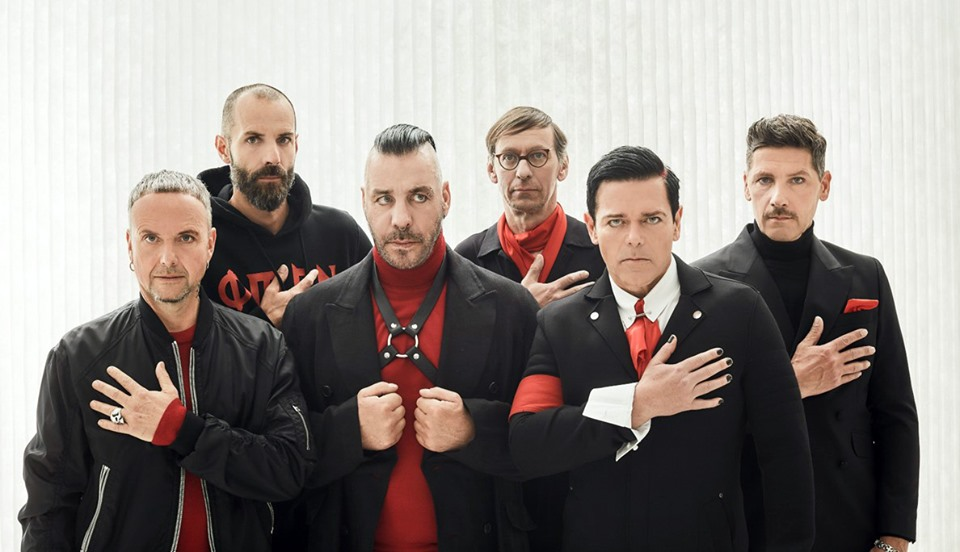

Rammstein (нем.; МФА: [ˈʀamʃtaɪ̯n]) — немецкая метал-группа, образованная в январе 1994 года в Берлине. Музыкальный стиль группы относится к жанру индастриал-метала (конкретно — его немецкой сцене Neue Deutsche Härte). Основные черты творчества группы: специфический ритм, в котором выдержана большая часть композиций, и эпатирующие тексты песен. Особую известность группе принесли сценические выступления, часто сопровождаемые использованием пиротехники, получившие признание в музыкальной среде. Состав группы ни разу не менялся. По состоянию на 2018 год группа продала около 20 млн копий альбомов.
28 августа 1988 года на авиабазе Рамштайн во время авиашоу с участием итальянской авиационной группы высшего пилотажа Frecce Tricolori произошло столкновение трёх самолётов, в результате которого погибли 70 человек и больше трёхсот получили ранения (об этой трагедии на авиабазе рассказывает одноимённая песня «Rammstein» из дебютного альбома группы Herzeleid). Согласно одной из версий, музыкантам Rammstein не было известно об этой трагедии, когда они придумали название группы. Придумано оно было Кристофом Шнайдером, Паулем Ландерсом и Кристианом Лоренцем. Со слов Пауля Ландерса:
Во время одной из наших поездок с Feeling B Шнайдер, Флаке и я придумали новое название группы. Как-то на стенке нашего автобуса мы написали «Rammstein Flugschau» (Авиашоу Раммштайн). Получилось глупо: мы тогда писали Rammstein с двумя «м», потому что не знали, что название города пишется с одной. Поначалу мы назвали себя так в шутку, но название прилипло к нам как нелюбимая кличка. Нам больше не удалось от него отделаться. Вообще-то мы не хотели называться Rammstein, это название было для нас слишком конкретным. Мы ещё искали: Milch (Молоко), или Erde (Земля), или Mutter (Мать), но название уже закрепилось.Также со слов Пауля Ландерса:
Просто сначала у нас была идея создания группы, которая называлась бы «Rammstein-Flugschau» («Авиашоу Rammstein»). Из баловства имя пару раз засветилось и так и прицепилось, хоть некоторые из группы и находили его глупым. Теперь, конечно, они об этом и знать не хотят. Во всяком случае, имя просто приклеилось, как кличка. «Flugschau», естественно, звучало слишком длинным, но Rammstein нам нравился, это и к музыке тоже подходило.Согласно Жаку Тати:
По словам ребят, название было выбрано по тому же принципу, что и Rolling Stones. Но когда группа стала немного известной, выяснилось, что судьба сыграла с раммштайновцами злую шутку. Дело в том, что о трагедии, произошедшей в августе 1988 года на базе НАТО в маленьком немецком городке Рамштайн (одно «м») во время проведения показательных полётов, участники Rammstein тогда ничего не знали — это было в Западной Германии. А когда узнали, менять название было уже поздно.Став популярной, группа долгое время дистанцировалась от взаимосвязи между их названием и названием места трагедии. Двойное «м» в названии позволяло объяснять слово как обозначение каменного тарана, но этот вариант был озвучен уже намного позже.